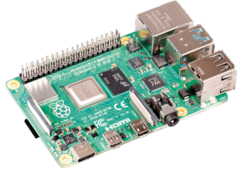

Objectifs pédagogiques
Les objectifs principaux de ce sujet de travaux pratiques sont d'exécuter et de comprendre la procédure d'installation et la mise en œuvre d'un serveur de fichiers et d'un serveur FTP, permettant à des utilisateurs de partager des ressources hors de leur machine.
Un objectif secondaire est de consolider la pratique des interfaces de commande de ligne déjà abordée dans le sujet de TP R2‑2.
Pour traiter ces exercices, il est recommandé d'avoir étudié le chapitre R2‑V du cours. Des renvois aux principaux éléments de cours ou à des pages web d'information générale sont donnés au fur et à mesure des questions.
Mise en situation
Environnement et matériel
Les manipulations demandées sont à accomplir sur un réseau local utilisant la pile de protocole TCP/IP et disposant de tous les services attendus : passerelle vers l'Internet, serveur DHCP, résolveur DNS.
La présence d'un serveur proxy comme ceux mis en œuvre par les DSI académiques de l'Éducation nationale peut sérieusement compliquer les procédures d'installation.
On requiert le matériel listé ci‑dessous :
- pour jouer le rôle de client, un poste de travail – de préférence un PC Linux, sinon un PC Windows avec service
sshactivé dans le terminal Powershell (cela évite de recourir à un logiciel tiers comme PuTTY) ; - pour jouer le rôle de serveur, un nano‑ordinateur de type Raspberry Pi 4 (ou éventuellement 3B), son bloc d'alimentation au secteur et une carte microSD de 8 Go minimum pour installer son système d'exploitation et ses logiciels ;
Ces deux machines doivent être l'une et l'autre raccordées au réseau local – typiquement, via un switch comme sur la figure ci‑dessus – et se voir attribuer chacune une adresse IP sur le même segment pour pouvoir communiquer – ce qui est assuré avec la présence d'un serveur DHCP sur le réseau local et la configuration appropriée des machines (cf. chap R2‑II ). Évidemment, il faut connaître la plage d'adresses IP dynamiques paramétrée par l'administrateur du réseau.
Pour des questions pédagogiques, pour contrôler la carte Raspberry Pi, plutôt que de lui raccorder spécifiquement un écran et un clavier, on fait le choix d'une connexion ssh via un terminal de commandes en ligne sur le poste de travail. C'est en effet la solution usuellement adoptée dans un contexte professionnel, et tout particulièrement dans le domaine du cloud computing.
Travail demandé
Effectuer toutes les manipulations méticuleusement dans l'ordre indiqué. Saisir les commandes en ligne par copier‑coller des commandes pour éviter les fautes de frappe et d'inattention. Dans une perspective de consolidation des connaissances, il est recommandé de bien comprendre le rôle de chaque commande, en consultant éventuellement les pages web données en référence.
Répondre aux explications demandées sur un cahier ou dans un fichier.
I – Travail préparatoire
- Préparation du poste de travail
- Préparation du système d'exploitation du serveur
- Mise en service et paramétrage du serveur 


II – Installation et test d'un serveur de fichiers
Cette procédure est inspirée de celle proposée au lien suivant , avec toutefois un ordre différent d'exécution des opérations : les droits d'accès au répertoire public sont modifiés après le montage sur le support de masse, sinon ces modifications sont perdues lors du redémarrage du système.
- Installation et paramétrage du logiciel Samba
- En connexion
sshavec la carte Rasberry Pi, installer le logiciel serveur de fichierssamba(cf. chap. R2‑IV ) : - Éditer le fichier de configuration de
samba, en activant la numérotation des lignes de l'éditeurnano: - Pour instaurer un contrôle d'accès, rechercher (à l'aide de la commande
Ctrl-Wde l'éditeurnano) la section# Authentication #et dé‑commenter la ligne ci‑dessous pour qu'elle devienne active : - Pour autoriser l'accès en écriture au répertoires principaux de stockage, rechercher la section
[homes]et paramétrer : - Pour configurer la partie publique, aller à la fin du fichier et ajouter :
- Sauvegarder les modifications du fichier (
Crlt-S), quitter l'édition (Ctrl-X) et relancer le logicielsamba: - Ajouter l'utilisateur
piau logicielsamba: - Installation et paramétrage du support de stockage de masse
- Brancher la clef USB sur un port de la carte Raspberry Pi.
- Si ce n'est pas déjà fait, démonter le volume puis formater la clef avec une partition
ext4W : - Dans le système de fichier de la carte, créer le répertoire
publicet le futur point de montage de la clef : - Monter le volume
sda1à son point de montage (le répertoire/home/shares/public/disk1) : - Autoriser l'accès en lecture et écriture dans ce répertoire public aux utilisateurs du groupe
usersdontpifait partie. Pour cela, attribuer le groupeuserset avec les droits d'écriture à au répertoire (et tous ses enfants) : - Redémarrer la carte (
sudo reboot), renouveler la connexionsshet vérifier à l'aide de lacommandedf | grep sda1(disk‑free) que le volume est bien monté automatiquement au démarrage. - Sur la racine du volume
disk1, créer un fichier videtestFile1.txt: - Exploitation du serveur de fichiers
- Sur un poste de travail Linux Mint (bureau Cinnamon), dans le panneau latéral d'une fenêtre d'explorateur de fichiers, cliquer sur le lien
Réseauet ouvrir l'accès au volumedisk1via une procédure d'authentification pour l'utilisateurpi. - Sur le poste de travail, ouvrir le fichier
testFile1.txtavec un éditeur (par exemple, Sublime Text), puis modifier son texte (par exemple, ajouter un point d'exclamation), sauvegarder et quitter. - Sur le poste de travail, créer un nouveau fichier vide
testFile2.txt.

sudo apt install samba -y
sudo nano -l /etc/samba/smb.conf
security = user
read only = no
[public] comment= Public Storage path = /home/shares/public valid users = @users force group = users create mask = 0660 directory mask = 0771 read only = no
sudo /etc/init.d/smbd restart
sudo smbpasswd -a pi
dmesg | grep "sd"
sda: sda1 où sda1 est l'identifiant cherché. umount /dev/sda1 sudo mkfs.ext4 /dev/sda1
sudo mkdir -p /home/shares/public/disk1
share appartient à l'utilisateur root et au groupe root et n'est pas accessible en écriture aux autres utilisateur – ce que l'on peut vérifier via la commande : ls -l /home/shares/
sudo mount /dev/sda1 /home/shares/public/disk1
fstab (file systems table) :
sudo nano /etc/fstab
/dev/sda1 /home/shares/public/disk1 auto noatime,nofail 0 0
Crlt-S), quitter l'édition (Ctrl-X). sudo chown -R root:users /home/shares/public sudo chmod -R 775 /home/shares/public
ls -l /home/shares/ ls -l /home/shares/public
pi appartient bien au groupe users avec la commande groups.
touch /home/shares/public/disk1/testFile1.txt
echo 'Welcome to the NAS!' >> /home/shares/public/disk1/testFile1.txt
cat /home/shares/public/disk1/testFile1.txt
ajouter un emplacement réseau . testFile1.txt dans le terminal de commandes en ligne. disk1. III – Installation et test d'un serveur FTP
La procédure indiquée permet de mettre en place un serveur FTP (cf. chap. R2‑V ) avec contrôle d'accès sur le volume disk1 créé à la section 2. Deux approches sont successivement proposées :
- avec le protocole FTP, donc sans chiffrement des échanges client‑serveur ;
- avec le protocole FTPS, donc avec chiffrement des échanges client‑serveur par le protocole TLS.
- Installation et paramétrage du paquet
vsftpden mode FTP - En connexion
sshavec la carte Rasberry Pi, commencer par installer le paquetvsftpd(cf. chap. R2‑V ) : - Ensuite, avant toute configuration, il est recommandé de sauvegarder une copie du fichier de configuration
vsftpd.conf, pour y revenir en cas de dysfonctionnement : - La configuration par défaut de l'application VsFTPD est restrictive. Les accès sont prévus mais peu sont autorisés. Pour rendre le serveur fonctionnel, il faut donc dé‑commenter la ligne d'affectation de chaque paramètre d'accès souhaité et/ou changer la valeur d'affectation pour obtenir les lignes suivantes.
-
write_enable=YES
Cela permet aux utilisateurs d'ajouter ou de supprimer des fichiers sur le serveur. -
idle_session_timeout=600
Cela fixe à 10 min (600 s) le délai maximal entre deux commandes que le client doit respecter, sinon il perd la connexion au serveur (cela évite qu'un client inactif reste connecté indéfiniment.) -
ftpd_banner=Welcome to SNIRx FTP service
où x est un numéro attribué par l'enseignant.
Le message de bienvenue est alors affiché au début d'une connexion. -
utf8_filesystem=YES
Les noms des dossiers et des fichiers transférés peuvent alors être composés avec des caractères pris dans l'UCS et encodés au format UTF‑8 (cf. chap. C3‑IX C). - Redémarrer le service pour prendre en compte ces modifications :
- Utilisation du serveur FTP via la commande
ftpet avec FileZilla - Sur le poste de travail, dans un terminal de commandes en lignes créer un répertoire et des fichiers de test en exécutant la série de commandes ci‑dessous :
- Ensuite, établir une connexion au serveur FTP en tant qu'utilisateur
piavec le même mot de passe que pour se connecter en SSH : - Maintenant, exécuter les commandes suivantes une par une, en expliquant ce que fait chacune. Veiller à ne pas supprimer d'autres fichiers ou dossiers que ceux mis en œuvre dans le cadre de ce TP, tant sur le poste de travail que sur le serveur :
-
pwdpuisls -
mk FTP(oumkdir) puislspuiscd FTPpuispwd -
lpwd(ou!pwd) puis!ls -
put ftpTest1puisls -
del ftpTest1puisls -
mput ftpTest1 ftpTest2en confirmant para(all) puisls -
mk TEST_DIRpuiscd TEST_DIRpuispwd -
mput *en confirmant parp(prompt off) puisls -
mdel *puisls -
cd ..puisls -
ls TEST_DIRpuisrm TEST_DIR(ourmdir) puisls -
lcd FTP_LOCAL_2puis!ls -l -
get ftpTest1puis!ls -l -
!rm ftpTest1puis!ls -l -
mget ftpTest1 ftpTest2puis!ls -l -
!rm ftp*puis!ls -lpuislcd .. -
!rmdir FTP_LOCAL_2(et non pas!rm) puis!ls -l -
cd ../..puispwd -
quit(ouexit) - Sur le poste de travail, lancer l'application FileZilla. Dans le menu
Fichier, paramétrer une connexion au serveur via la commandeGestionnaire de site…, en cliquant sur le boutonNouveau site. - Donner à la connexion le nom
RPIxoù x est le même numéro que celui renseigné à la question 1.c (cf. supra ) pour la bannière d'accueil. - Renseigner tous les paramètres de l'onglet
Généralcomme sur la capture d'écran ci‑dessus, en saisissant dans la rubriqueHôtel'adresse IP du serveur FTP - Dans le navigateur du site local (colonne de gauche), retrouver et ouvrir le dossier
FTP_LOCAL_1. Effectuer alors des manipulations – création de dossiers, transferts de fichiers dans un sens et dans l'autre, suppression de fichiers, etc. – comme à la question 2.c avec la commande en ligneftp. - Paramétrage et utilisation du paquet
vsftpden mode FTPS - En connexion
sshavec la carte Raspberry Pi, éditer à nouveau le fichier de configurationvsftpd.conf: - Sur le poste de travail, relancer l'application FileZilla. Dans le menu
Fichier, sélectionner la commandeGestionnaire de site…pour modifier la connexionRPIx. Choisir pour la rubriqueChiffrement:
Connexion explicite sur TLS
puis cliquer directement sur le boutonConnexion. - Vérifier que toutes les manipulations effectuées à la question 2.d sont faisables normalement avec ce protocole sécurisé par chiffrement.
sudo apt install vsftpd -y
sudo cp /etc/vsftpd.conf /etc/vsftpd.conf_back
nano : sudo nano -l /etc/vsftpd.conf
Ctrl-W de l'éditeur nano. local_root=/home/shares/public/disk1/
pour définir le dossier d'accès dans le système de fichiers du serveur FTP.
Ctrl-S) et quitter (Ctrl‑X) l'édition.
sudo systemctl restart vsftpd
systemctl status vsftpd
mkdir FTP_LOCAL_1 && cd FTP_LOCAL_1 && echo "Test FTP ASCII 1" > ftpTest1 && touch ftpTest2 && echo "Test FTP UTF-8 (nom du fichier)" > fichierSécurité && mkdir FTP_LOCAL_2 && ls -l
ls -l) et vérifier l'exécution correcte de toutes les commandes précédentes. ftp pi@adresse IP de la carte
Connexion. sudo nano -l /etc/vsftpd.conf
ssl_enable=YES
Ctrl-S) et quitter (Ctrl‑X) l'édition puis redémarrer le service pour prendre en compte cette modification :
sudo systemctl restart vsftpd